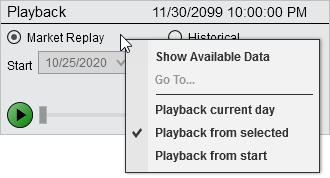
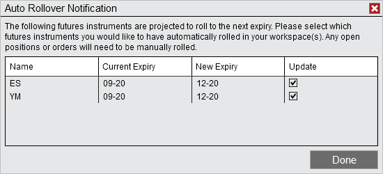
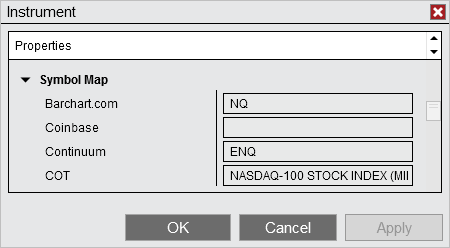
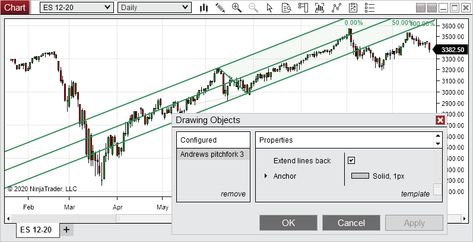

|
<< Click to Display Table of Contents >> 8.0.23.2 |


|
8.0.23.2
|
<< Click to Display Table of Contents >> 8.0.23.2 |
|
December 14, 2020
Issue # |
Status |
Category |
Comments |
14721 |
Fixed |
Backup & Restore |
Importing backups from 8.0.22.2 that included historical data resulted in an error |
14729 |
Fixed |
DrawingTool, Chart |
Rolling over a futures that had drawing objects on the chart resulted in the objects not being visible |
14562 |
Fixed |
DrawingTool, Templates |
Drawing objects with the setting Attach to - Local in the template were removed when changing instruments |
14735 |
Fixed |
DrawingTool, Templates |
Attach to - All Charts setting was not saved when using a template |
14733 |
Fixed |
NinjaScript |
With a managed approach, close position occurred after entry order when reversing |
14723 |
Fixed |
Playback, Strategy |
Strategies in Playback could show order of executions incorrectly |
14724 |
Fixed |
SuperDOM |
Horizontal grid lines were wider than expected |
8.0.23.1 Release Date
November 23, 2020
Issue # |
Status |
Category |
Comments |
14717 |
Fixed |
Rithmic |
Resolved a scenario that prevented connecting and resulted in an 'account already exists' error |
14715 |
Fixed |
Interactive Brokers |
Positions did not display when submitted to a master FA account |
14714 |
Fixed |
Strategy |
Strategies did not disable upon manual position close |
14712 |
Fixed |
Control Center |
Auto Rollover still popped up when unchecking instrument and pressing done |
November 16, 2020
Features |
.NET 4.8 Upgrade General Feature #14630
NinjaTrader 8 is built utilizing Microsoft's .NET framework. Microsoft recommends upgrading to .NET Framework 4.8 to receive the highest level of performance, reliability, security, and long-term support from Microsoft. This update is expected to be entirely transparent as most users already have .NET framework 4.8 automatically installed via windows update. When installing NinjaTrader, it will prompt you if you need to install .NET 4.8, and if required, you can download it here. Additionally, as a result of this update, Windows 8.1 becomes the minimum supported operating system. |
New default playback mode 'Playback from selected' Playback Feature #14287
This new mode will load historical data up to the selected time frame and start playback from there. This will increase the speed of changing times for users who don't have scripts or strategies that need to process each data event as it comes in.
 |
Auto rollover notification Instruments, DataBase Feature #14599
A pop up will now appear when starting NinjaTrader or opening a workspace while there is an instrument in the instrument list or workspace that has rolled over. This will help ensure that the latest contracts are loaded with ease.
 |
COT instrument mapping added to Instrument editor Indicator, Instruments Feature #14552
Mapping for COT data has been added to the Instrument editor to allow adding COT mapping for newly created instruments or adding to existing ones. For some instruments that do not have COT data you could map to related instruments if desired. For example, you could map COT data from a mini contract to a micro.
 |
Added extended backwards option for Andrew's Pitchfork DrawingTool Feature #14553
The extend lines back property adds additional functionality to Andrew's Pitchfork for your technical analysis needs.
 |
Interactive Broker auto reconnects after daily restart Interactive Brokers Feature #14510
Both Traders Workstation and Gateway connections will now auto reconnect after their daily restart. |
Issue # |
Status |
Category |
Comments |
14383 |
Fixed |
Alerts |
Time based conditions reverted to Data Series when condition was re-opened |
14470 |
Fixed |
Alerts |
Changing an indicators label removed it from an alert condition |
14473 |
Fixed |
ATM Strategies |
The 2nd modification to TIF GTD within ATM parameters was not reflected in the entry window's TIF |
14476 |
Fixed |
ATM Strategies |
If an order partially filled at the target then filled at the stop, the target could not be canceled |
14581 |
Fixed |
ATM Strategies |
Stop strategies could not be re-enabled after using the right click menu to make changes to breakeven properties |
14453 |
Fixed |
Backup & Restore |
There was an error exporting scripts when a PC was set to use Belgian Dutch as the language |
14653 |
Fixed |
Bars |
Line break bars could have an unexpected spike |
14568 |
Fixed |
Chart |
Global crosshairs applied time scroll into margins |
14578 |
Fixed |
Chart |
Indicator plot did not correctly scale when using overlay scale justification and auto scale |
14647 |
Fixed |
Chart |
The text for z-levels did not match the text color property |
14467 |
Fixed |
Chart, NinjaScript |
Duplicating a chart with an indicator which uses public variables doubled the value |
13995 |
Fixed |
Chart, Strategy |
Strategy added indicators could only plot on primary panel |
14471 |
Fixed |
Control Center |
Using a non-Gregorian calendar resulted in a crash |
14544 |
Fixed |
Control Center |
Opening with no internet connection resulted in a crash |
14638 |
Fixed |
Control Center |
Selecting Repair DB then Reset DB caused an error |
14641 |
Fixed |
Control Center |
Exporting a strategy caused the cursor to change unexpectedly |
14669 |
Fixed |
Control Center |
Resolved a scenario where a file could still be in use after exiting and trying to start NinjaTrader again |
14637 |
Fixed |
CQG |
GTD orders restored incorrect date with WebApi |
14644 |
Fixed |
CQG |
The message indicating an account is not enabled for data was not displaying |
14651 |
Fixed |
CQG |
OnPositionUpdate could report incorrect position when account was flat |
14674 |
Fixed |
CQG, Strategy |
Chart could lock up if a multi data series strategy that didn't use the second series moved a stop |
14449 |
Fixed |
CQG, Orders |
Leaving WebAPI connected over night prevented an OCO order from being modified the next day |
14515 |
Fixed |
CQG, Orders |
WebAPI ATMs using MIT for profit would not cancel the stop when target was filled |
14504 |
Fixed |
DrawingTool |
When using 'stay in draw mode' and double clicking on placed text to modify it there could be an error |
14521 |
Fixed |
DrawingTool |
Trend Channel snapped inconsistently to OHLC price when parallel Y value was modified |
14535 |
Fixed |
DrawingTool |
Drawing objects with visible set to disabled reappeared when an interval was changed |
14562 |
Fixed |
DrawingTool |
Drawing objects could be removed when switching instruments when using some settings and default template settings together |
14642 |
Fixed |
DrawingTool |
Risk Reward drawing tool did not set ratio when drawn from code |
14631 |
Fixed |
DrawingTool, Templates |
Draw objects were not updated when using 2nd template on same object |
14518 |
Fixed |
Indicator |
Candlestick pattern Inverted Hammer / Shooting star were incorrect |
14601 |
Fixed |
Indicator, DrawingTool |
Risk Reward drawing object did not properly update price levels when called from an indicator using Calculate.PriceChange |
14496 |
Fixed |
Instruments |
Changing instrument type on instrument creation caused an error |
14497 |
Fixed |
Instruments |
Pasting symbol mapping for an instrument did not work on first attempt |
14549 |
Fixed |
Instruments |
Select an instrument that was already selected did not update selected instrument text properly |
14660 |
Fixed |
Instruments |
When a stock chart is open, removing that instrument via the Instruments window caused a crash |
14628 |
Fixed |
Instruments, Chart |
Added instruments did not appear in instrument list of existing charts |
14490 |
Fixed |
Interactive Brokers |
Connection interruption while requesting historical data resulted in no data |
14522 |
Fixed |
Interactive Brokers, Strategy |
Strategy Position did not update in Strategies tab of the Control Center |
14533 |
Fixed |
Interactive Brokers, Time and Sales |
No shapshot data came through for illiquid contracts |
14503 |
Fixed |
Kinetick, IQFeed, Options |
Futures options did not have the point value applied |
14611 |
Fixed |
Kinetick, Option Chain |
AAPL options failed to load |
14495 |
Fixed |
Kinetick, Options |
Ticksize for treasury options were incorrect |
14432 |
Fixed |
Kinetick, SuperDOM |
Using multiple connections and experiencing a disconnect could result in a bad depth data |
14486 |
Fixed |
Kinetick, SuperDOM |
Depth volume would not update from an order until the scroll wheel was used |
14530 |
Fixed |
Market Analyzer |
Column sorting by description did not work |
14505 |
Fixed |
News, Window Linking |
Instrument link did not work with the News window |
14306 |
Fixed |
NinjaScript |
ExitOnSessionClose did not close historical positions when using Wait Until Flat |
14462 |
Fixed |
NinjaScript |
Was unable to retrieve type info for 'NinjaTrader.NinjaScript.AddOnBase' from assembly 'NinjaTrader.Custom' |
14539 |
Fixed |
NinjaScript |
Input indicator with secondary series did not trigger on bar update properly when days to load changed |
14616 |
Fixed |
NinjaScript |
Profit target was not submitted every other time when strategy was disabled/re-enabled if a simulated stop was used |
14657 |
Fixed |
NinjaScript Editor |
Resolved a scenario where compile could become disabled |
14448 |
Fixed |
NinjaScript, Chart Trader |
Chart Trader would immediately re-render chart for order modification events even when Chart Trader was disabled |
14550 |
Fixed |
Order Flow + |
Order Flow VWAP had an error when bars had no volume |
14554 |
Fixed |
Order Flow + |
Order Flow Volume Profile setting Show POC didn't work with Price profile type |
14593 |
Fixed |
Order Flow + |
Order Flow Volume Profile would only render a single line if multiple lines were at the same level |
14613 |
Fixed |
Order Flow + |
Order Flow VWAP could have wrong weekly start time |
14634 |
Fixed |
Order Flow + |
Order Flow Volume Profile failed to plot when splits and dividends were updated |
14633 |
Fixed |
Playback, Strategy, Chart |
Start/end dates listed in Strategy Performance reflected start/end date of original chart, not playback start/end dates |
14603 |
Fixed |
Rithmic |
Connection could get stuck if there was a large amount of events being downloaded |
14671 |
Fixed |
Rithmic |
Instruments MGC, HO, and RB could have position return with a different exchange |
14678 |
Changed |
Rithmic |
Add UProfitTrader connection points |
14580 |
Changed |
ShareAdapter |
StockTwits character limit was increased to 1,000 |
14571 |
Fixed |
ShareAdapter |
StockTwits share service caused an error when creating for the second time |
14480 |
Fixed |
Simulator, Options |
Realized PnL and cash value did not match when trading options in simulation |
14577 |
Fixed |
Strategy |
SetTrailStop incorrectly amended stop price, if an added data series was for a contract older than 1 expiration ago |
14620 |
Fixed |
Strategy |
A multi-series script that submitted one order, canceled it, then submitted a second order ignored the second order when run on historical data |
14654 |
Fixed |
Strategy |
Mismatched calculation mode between SetStopLoss/SetProfitTarget caused incorrect exit order quantity |
14659 |
Fixed |
Strategy |
Resolved a scenario where instrument property was not disabled correctly when strategy was enabled |
14684 |
Fixed |
Strategy |
Quickly disabling/enabling a strategy could result in it's state being our of sync between the Control Center and chart |
14385 |
Fixed |
Strategy Analyzer |
Moving a column then adding another column caused the first column to revert |
14464 |
Fixed |
Strategy Analyzer |
Analysis graph could draw incorrectly when plotting scaled in/out position by entry time |
14469 |
Fixed |
Strategy Analyzer |
Duplicating window with multiple tabs with charts resulted in errors |
14474 |
Fixed |
Strategy Analyzer |
If Region Format was set to English (Germany) the leading zero and comma was stripped from input display |
14485 |
Fixed |
Strategy Analyzer |
Duplicating window with a new tab that was not ran resulted in an error |
14528 |
Fixed |
Strategy Analyzer |
ExitOnSessionClose orders did not have slippage applied |
14551 |
Fixed |
Strategy Analyzer |
Optimization failed on strategies that enter with no exits when using certain Optimize settings |
14575 |
Fixed |
Strategy Analyzer |
Bars.Count for a secondary series of a strategy changed between backtest runs |
14542 |
Fixed |
Strategy Builder |
An indicator offset was not applied with crossAbove/crossBelow operator |
14540 |
Fixed |
Strategy Builder |
The bars ago for current bar check defaulted to 1 rather than the passed bars ago value when a variable was used for an offset |
14541 |
Fixed |
Strategy Builder |
Using a numeric value could result in an error |
14614 |
Fixed |
Strategy Builder |
Assigning value of an added data series to a custom series would not compile |
14393 |
Fixed |
Strategy, Chart |
Settings IsOverlay to false did not plot indicators to sub panel |
14508 |
Fixed |
Strategy, Control Center |
Strategies added to Strategies tab of the Control Center didn't appear when opening workspace |
14666 |
Fixed |
Strategy, Orders |
A strategy which submits a stop loss and exits on session close would submit a stop loss if strategy was enabled while market was closed |
14481 |
Fixed |
SuperDOM |
ZT was missing depth volume for every other tick |
14445 |
Fixed |
SuperDOM, Indicator |
Indicators would report historical data as real-time data |
14582 |
Fixed |
TD Ameritrade |
Disabling then re-enabling an internet connection prevented a proper reconnect |
14556 |
Fixed |
TD Ameritrade |
Attempting to connect to accounts from countries unsupported by the API caused a crash |
14598 |
Fixed |
TD Ameritrade |
Resolved a scenario where live order events came in on a simulation license causing errors |
14560 |
Fixed |
TD Ameritrade, Orders |
An order was rejected if it was being authenticated while the access token was being refreshed |
14538 |
Fixed |
TD Ameritrade, Strategy |
Profit Target was not submitted with SetProfitTarget if no SetStopLoss was used |
13943 |
Fixed |
Tick Replay, Chart |
Indicator using Correlation as input series could return incorrect values in TickReplay |
14395 |
Fixed |
Tick Replay, NinjaScript |
There could be missing ticks when transitioning from historical tick replay data to real-time data |
14409 |
Fixed |
Tick Replay, NinjaScript |
TickReplay indicators diverged from Calculate.OnBarClose instance on transition to real-time |
14501 |
Fixed |
Workspaces |
Closing a workspace that had an options instrument that wasn't in the db caused an error |
14511 |
Fixed |
Workspaces |
Resolved a scenario where using 'Save workspace as' did not properly save it |
14573 |
Fixed |
Workspaces |
Databox disappeared when saving over the original workspace it was opened in |